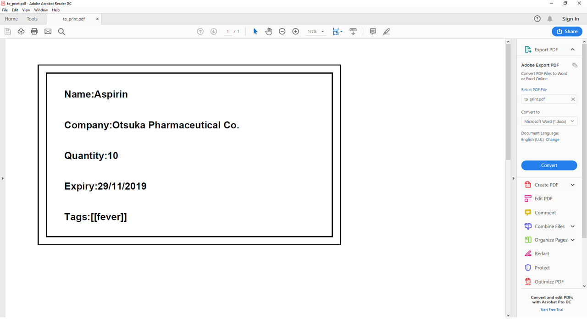
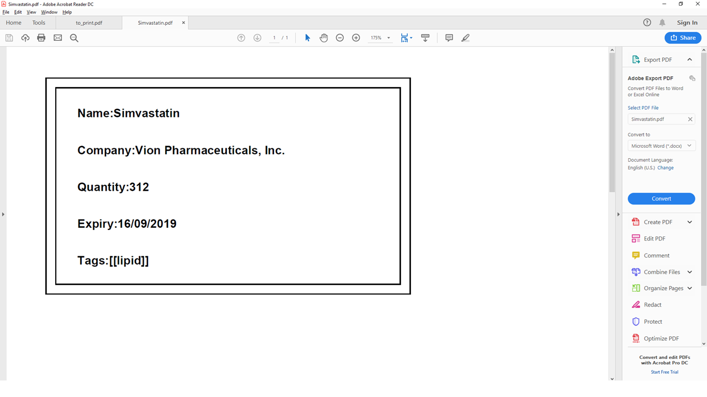

Introduction
This Project Portfolio shows my contributions to the group project, such as features and documentation. I was in charge of the of the logic component, which mainly focus on the command features of the project. This project is under a core module of software engineering in the my school.
Overview
The group project, Meditabs, is a medicine inventory management for pharmacist to streamline the process of handling the stick taking process. The user mainly uses the Command-Line Interface (CLI) to interact. Upon looking at user case, we implemented a label function to allow the pharmacist to print out the medicine information. This is for easier management for the physical medicine itself.
Summary of contributions
-
Major enhancement: Added the
Labelcommand-
What it does: Allows the user to output the information of the medicine onto a Portable Document Format (PDF).
-
Justification: Pharmacist would like to have the printed information of certain medicine and label the physical counterpart. With the PDF, the pharmacist may use external printers and print out the information on the label as a sticker. PDF is widely used as a file extension.
-
Highlights: Added security layer to the naming of the file (Auto include .pdf extension) such that users may not over write other important files. Also set a limit on the the length of filename.
-
Credits: Apache PDFBox external library is imported to help manipulate and output the stream of information to the PDF file. More information can be found under: https://pdfbox.apache.org/
-
-
Minor enhancement: -
-
Code contributed: Project Code Dashboard
-
Other contributions:
-
Project management:
-
Community:
-
Documentation:
-
Tools:
-
Integrated third party libraries (Apache PDFBox) to the project: #40
-
-
Contributions to the User Guide
Below are my contributions to the user guide to showcase my technical skills on user end documentation. |
Printing labels : label
-
You can label any specific medicine information in the inventory through the Portable Document Format (PDF).
Open the PDF file under the PDF folder to view and print your selected medicine. -
Label will include name of medicine and standard label template.
This includes the company that manufactured it, expiry date and the tags that was set with it. -
Your format for using the command should follow:
label INDEX [f/FILE_NAME] -
File name is optional.
All PDF files can be found under the PDF folder
Fig 5.12.1 PDF folder highlighted
Examples:
-
Open up the software interface. (Fig 5.12.2)

Fig 5.12.2 Software interface
-
Key in
listfollowed by
label 1.
This selects the 1st medicine in the inventory and output the information to a default PDF file namedto_print.-
A confirmation message will be shown to indicate to you that it have been successfully labeled.
-
-
You can open the file in the PDF folder (Fig 5.12.1) with your preferred PDF reader to print the medicine information.
A example below of how the label information will look like (Fig 5.12.2)
Fig 5.12.2 Medicine information
-
If you want to name the output file, follow the steps below:
-
find n/ Simvastatin
label 1 f/Simvastatin
Similar to the example above, the 1st medicine information will be output to a file nameSimvastatin. (Fig 5.12.3)Fig 5.12.3 Simvastatin medicine information
The labelcommand will overwrite theto_printfile when filename is not specified. Do print the required file first before using thelabelcommand again.-
Please follow Appendix A for naming conventions.
-
-
Preview of results
Preview of results for Export and Label Commands to be available in the UI.
-
Current implementation: You may have to manually search for the external files created in their respective folders.
-
In v2.0, a snapshot of the resulting files will be previewed under the UI for easier reference. This further streamline the inventory management and improve your usability.
-
Below is a mock up on how the UI may look like with the features integrated.
Importing pictures
Import of pictures to aid in the medicine identification.
-
Pictures and snapshot of the medicine may be added to MediTabs such that it is easier for you to identify what the physical medicine looks like.
Contributions to the Developer Guide
Below are my contributions to the developer guide to showcase my technical skills on developer end documentation. |
Medicine Label using Label Command
Users can use the command to output medicines information to the PDF folder. Information will be in Portable Document Format (PDF).
Current implementation:
The label command uses Apache PDFBox, a 3rd party library capable of creating and editing PDF files. To import the library:
Locate the build.gradle file under the main folder. Insert the new dependency implementation group: org.apache.pdfbox, name: pdfbox, version: 2.0.13.
This imports the library over to the project for use. You can look at [Managing Dependencies] for more information on 3rd party libraries.
There are many classes available in the Apache PDFBox, the key operations that we are using are:
-
PDDocument- For creating a new blank PDF file for the medicine details to be exported to. -
PDPage- Creates a new PDPage instance for embedding. -
PDPageContentStream- Provides the ability to write a page content stream.
The following sequence diagram shows how the label operation works:
Fig 4.4 UML sequence diagram
Usage scenario example
Label command without filename behaviour:
-
The user launches the application for the first time. An empty InformationPanel is displayed. (Fig 4.4.1.1)
-
The user executes the
label 2to output the label of the 2nd medicine indexed in the inventory. Since no file name is included in the argument, the default filename 'to_print' is used instead.-
Based on the UML diagram above, "label 2" will be passed onto the
InventoryParser. LabelCommand will be created and returned to the logic manager. -
Logic manager will
execute()theLabelCommand. The PDF file will be created using thePDFWrapperclass.
-
-
The user can find the file
to_printunder the main folder. (Fig 4.5.3)

Fig 4.4.1.1
Fig 4.4.1.2 (PDF folder highlighted)
Label command with filename behaviour:
-
The user executes
label 1 f/file_to_printto output the label of the 1st medicine indexed in the inventory. TheInventoryParserclass will be able to tokenize and read the desired file name. LabelCommand will be created and return to the logic manager.-
Logic manager will
execute()theLabelCommand. The PDF file will be created using thePDFWrapperclass.
-
-
The user can find a new file
file_to_printunder the same main folder.
The following activity diagram shows the behaviours in summary (Fig 4.4.1.3):
(Fig 4.4.1.3)
If the user would execute another label 1, the original to_print file will be replaced. Users are warned in the User Guide to be caution about overwriting files.
|
Design Consideration
Aspect: How label executes
-
Alternative 1 (current choice): Creates a new
PDFDocumentevery time a medicine it to be labeled.-
Pros: Easy to implement.
-
Cons: Uses more of the user computer memory space as it creates the temporary file.
-
-
Alternative 2: Find the existing PDF file and edit.
-
Pros: Will use less memory.
-
Cons: We have to read the existing file which requires more time to execute. PDF files are also meant to not be edited once created.
-
Labeling medicine information onto a PDF file
-
Output a medicine information onto a PDF file using default name.
-
Prerequisites: List all medicines using the
listcommand. There is at least a medicine in the first index -
Test case:
label 1
Expected: Success message shown in the UI. Current medicine on index one is successfully output to a PDF file under the PDF folder. Filename isto_print. -
Test case:
label
Expected: Unsuccessful message shown in the UI. No file will be output in the PDF folder.
-
-
Output a medicine information onto a PDF file with its name given by the user. Filename must follow Appendix A. Else, error message is shown.
-
Prerequisites: List all medicines using the
listcommand. There is at least a medicine in the first index -
Test case:
label 1 f/newfile
Expected: Success message shown in the UI. Current medicine on index one is successfully output to a PDF file under the PDF folder. Filename isnewfile. -
Test case:
label 1 f/^@#&
Expected: Expected: Unsuccessful message shown in the UI. No file will be output in the PDF folder.
-